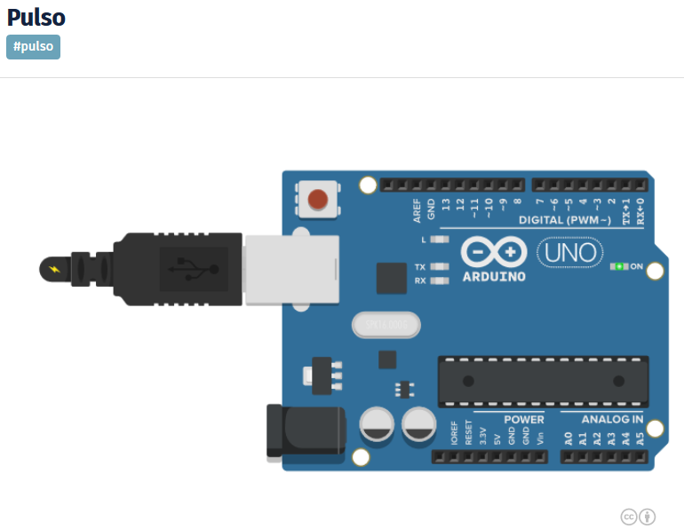

IMPRESION
SEGÚN TIEMPO CARGADO EN VARIABLE
Archivos:
impresion_cada_segundo
Interes:
- Creación de una varaible que se activa durante un ciclo programa
en un intervalo de tiempo.
PULSO PARA LA
IMPRESION SIN DELAY()
En el siguiente Sketch, se produce la impresión en
monitor Serial un intervalo de tiempo que podemos modificar modificando
la variable duración pulso.
En cada intervalo de tiempo almacenado en duración
pulso, se activa la variable pulso un ciclo programa.
No utilizamos la función delay() con lo que tenemos
al micropocesor ocupandose de todos los procesos cada ciclo programa.

/* El bit pulso se pone a 1 un ciclo progama.
Cada vez que pasa los segundos almacenados en tiempo_ciclo.
*/
boolean bit_pulso=0; // se activa cada segundo un ciclo programa
unsigned int tiempo_ciclo=3000;// la duracion en la que va a producirse el pulso, puede oscilar
entre 65536 ms (65 segundos.)
unsigned long tiempo_inicio=0;
void setup(){
Serial.begin(9600);
}
void loop(){
if (tiempo_inicio==0) tiempo_inicio=millis();//si la variable tiempo_inicio vale
cero carga el valor de tiempo actual
if (millis()-tiempo_inicio>tiempo_ciclo)// si el tiempo desde que
cargue la variable supera el tiempo cilclo
{
bit_pulso=1;//activo el bit bit_pulso
tiempo_inicio=0;// tiempo_inicio al ponerlo a 0, lca preparo para carga un nuevo tiempo.
}
else bit_pulso=0;//si el tiempo en que carge la variable es menor que
duracion pulso, el bit bit_pulso esta a cero
//acciones que se ejecutan cada segundo
if (bit_pulso==1){
//impresion
Serial.print ("Esta impresion se realiza cada ");
Serial.print(tiempo_ciclo);
Serial.println(" milisegundos");
Serial.println("valor almacenado en tiempo ciclo");
}
}//fin de programa